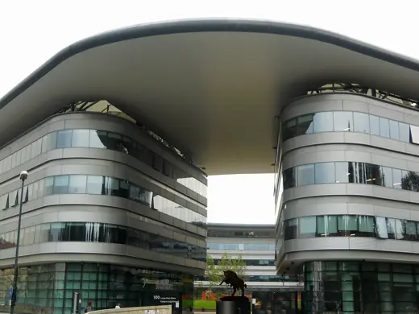
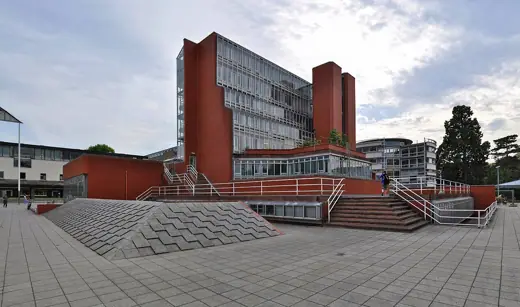

Buildings 229
Sort
 Bauhaus Dessau1926 · Dessau
Bauhaus Dessau1926 · Dessau Mode Gakuen Cocoon Tower2008 · Tokyo
Mode Gakuen Cocoon Tower2008 · Tokyo Nantes School of Architecture2009 · Nantes
Nantes School of Architecture2009 · Nantes Yale Art and Architecture Building1963 · New Haven
Yale Art and Architecture Building1963 · New Haven Saitama Prefectural University1999 · Koshigaya
Saitama Prefectural University1999 · Koshigaya Cathedral of Learning1937 · Pittsburgh
Cathedral of Learning1937 · Pittsburgh Green Building (MIT Building 54)1964 · Cambridge
Green Building (MIT Building 54)1964 · Cambridge Toni-Areal2014 · Zurich
Toni-Areal2014 · Zurich LASALLE College of the Arts2007 · Singapore
LASALLE College of the Arts2007 · Singapore Gandhi Bhawan1962 · Chandigarh
Gandhi Bhawan1962 · Chandigarh Siamese Towers2005 · Santiago
Siamese Towers2005 · Santiago Phillips Exeter Academy Library1971 · Exeter
Phillips Exeter Academy Library1971 · Exeter Carpenter Center for the Visual Arts1963 · Cambridge
Carpenter Center for the Visual Arts1963 · Cambridge Aalto University Undergraduate Centre (Otaniemi main building)1966 · Espoo
Aalto University Undergraduate Centre (Otaniemi main building)1966 · Espoo Central European University2016 · Budapest
Central European University2016 · Budapest Leicester University Engineering Building1963 · Leicester
Leicester University Engineering Building1963 · Leicester Hong Kong Design Institute2010 · Hong Kong
Hong Kong Design Institute2010 · Hong Kong Anacleto Angelini Innovation Center2014 · Santiago
Anacleto Angelini Innovation Center2014 · Santiago FAU-USP Building1969 · São Paulo
FAU-USP Building1969 · São Paulo Ray and Maria Stata Center (MIT Building 32)2004 · Cambridge
Ray and Maria Stata Center (MIT Building 32)2004 · Cambridge Gando Primary School2001 · Gando
Gando Primary School2001 · Gando S. R. Crown Hall1956 · Chicago
S. R. Crown Hall1956 · Chicago Rolex Learning Center2010 · Lausanne
Rolex Learning Center2010 · Lausanne School of the Arts, Singapore2010 · Singapore
School of the Arts, Singapore2010 · Singapore Educatorium1997 · Utrecht
Educatorium1997 · Utrecht St Catherine's College, Oxford1962 · Oxford
St Catherine's College, Oxford1962 · Oxford UTEC University Campus2015 · Lima
UTEC University Campus2015 · Lima Sagrada Família schools1909 · Barcelona
Sagrada Família schools1909 · Barcelona Baker House1949 · Cambridge
Baker House1949 · Cambridge University of Constantine1972 · Constantine
University of Constantine1972 · Constantine Bocconi University Urban Campus2019 · Milan
Bocconi University Urban Campus2019 · Milan McCormick Tribune Campus Center2003 · Chicago
McCormick Tribune Campus Center2003 · Chicago Moscow School of Management Skolkovo2010 · Moscow
Moscow School of Management Skolkovo2010 · Moscow Blavatnik School of Government2015 · Oxford
Blavatnik School of Government2015 · Oxford Glasgow School of Art1909 · Glasgow
Glasgow School of Art1909 · Glasgow Jockey Club Innovation Tower2014 · Hong Kong
Jockey Club Innovation Tower2014 · Hong Kong SDU Campus Kolding2014 · Kolding
SDU Campus Kolding2014 · Kolding CEPT University1966 · Ahmedabad
CEPT University1966 · Ahmedabad
Campus Einaudi2012 · Turin Milstein Hall, Cornell University2011 · Ithaca
Milstein Hall, Cornell University2011 · Ithaca RMIT Design Hub2012 · Melbourne
RMIT Design Hub2012 · Melbourne Scotland Street School1906 · Glasgow
Scotland Street School1906 · Glasgow Future University Hakodate2000 · Hakodate
Future University Hakodate2000 · Hakodate Indian Institute of Management Bangalore1983 · Bengaluru
Indian Institute of Management Bangalore1983 · Bengaluru
History Faculty Building, Cambridge1968 · Cambridge Friendship Centre2011 · Gaibandha
Friendship Centre2011 · Gaibandha Kuggen2011 · Gothenburg
Kuggen2011 · Gothenburg